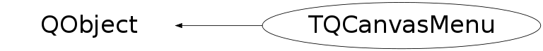

Function Members (Methods)
public:
| TQCanvasMenu(QWidget* parent = 0, TCanvas* canvas = 0) | |
| TQCanvasMenu(QWidget* parent, QWidget* tabWin, TCanvas* canvas) | |
| virtual | ~TQCanvasMenu() |
| static TClass* | Class() |
| char* | CreateArgumentTitle(TMethodArg* argument) |
| char* | CreateDialogTitle(TObject* object, TMethod* method) |
| void | Dialog(TObject* obj, TMethod* method) |
| void | Execute(int id) |
| virtual TClass* | IsA() const |
| void | Popup(TObject* obj, double x, double y, QMouseEvent* e) |
| virtual void | ShowMembers(TMemberInspector& insp) |
| virtual void | Streamer(TBuffer& b) |
| void | StreamerNVirtual(TBuffer& b) |
private:
| TQCanvasMenu(const TQCanvasMenu& c) | |
| TQCanvasMenu& | operator=(const TQCanvasMenu&) |
Data Members
protected:
| TObject* | fCurrObj | current selected object |
| TQRootDialog* | fDialog | the TQRootDialog which is used to prompt for |
| TList | fMethods | list of Root metheds associated with the selected object |
| double | fMousePosX | mouse position in user coordinate |
| double | fMousePosY | mouse position in user coordinate |
| QWidget* | fParent | |
| QPopupMenu* | fPopup | Qt popup menu |
| QWidget* | fTabWin | parents widgets |
| TCanvas* | fc | pointer to the ROOT canvas |
Class Charts
{kind=link}
{kind=link}
{kind=link}
{kind=link}

Function documentation
char * CreateDialogTitle(TObject* object, TMethod* method)
Create title for dialog box retrieving argument values.
char * CreateArgumentTitle(TMethodArg* argument)
Create string describing argument (for use in dialog box).
void Execute(int id)
void Dialog(TObject* obj, TMethod* method)
Create dialog object with OK and Cancel buttons. This dialog
prompts for the arguments of "method".
TQCanvasMenu(const TQCanvasMenu& c)